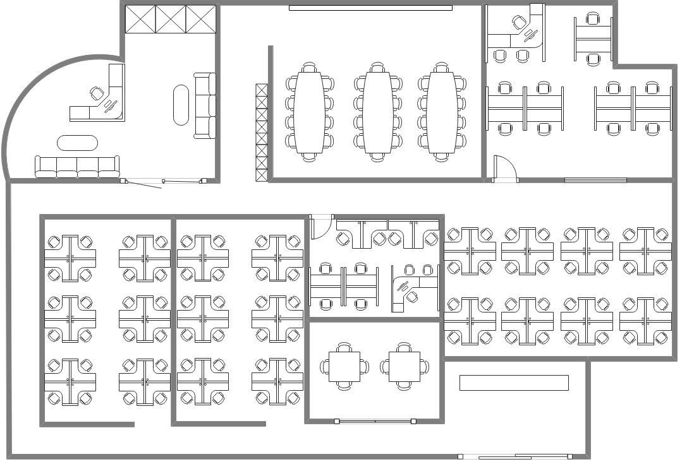

!DOCTYPE html>
<html lang="en">
<head>
    <meta charset="UTF-8">
    <meta name="viewport" content="width=device-width, initial-scale=1.0">
    <link rel="stylesheet" href="styles/reset.css" />
     <link rel="stylesheet" href="styles/monitoramento.css" />
      <link rel="stylesheet" href="styles/navmenu.css">
        <link rel="stylesheet" href="styles/stylehome.css" />
    <link rel="preconnect" href="https://fonts.googleapis.com" />
    <link rel="preconnect" href="https://fonts.gstatic.com" crossorigin />
    <link
      href="https://fonts.googleapis.com/css2?family=Poppins:wght@300;400;600;700&display=swap"
      rel="stylesheet"
    />
    <script
      src="https://kit.fontawesome.com/f74aac3c41.js"
      crossorigin="anonymous"
    ></script>
    <link rel="stylesheet" href="styles/monitoring.css">
    <title>Monitoramento EcoEdifício</title>
</head>
<body>
    <header>
        <nav class="menu">
          <div class="logo">
            <figure>
              
            </figure>
          </div>
          <ul class="nav-links">
            <li><a href="home.html" title="home"><i class="fa-solid fa-house"></i></a></li>
            <li><a href="dispositivos.html" title="dispositivos"><i class="fa-solid fa-server"></i></a></li>
            <li><a href="dados.html" title="dados"><i class="fa-solid fa-database"></i></a></li>
            <li><a href="monitoramento.html" title="monitoramento"><i class="fa-solid fa-chart-simple"></i></a></li>
            <li><a href="pcontrole.html" title="painel de controle"><i class="fa-solid fa-gears"></i></a></li>
          </ul>
        </nav>
    </header>
  <main>
        <section class="monitoring">
            <h1>Monitoramento do Edifício</h1>
            <div class="building-container">
                
                <div class="status-point" style="top: 20%; left: 30%;" data-status="Ativo"></div>
                <div class="status-point" style="top: 50%; left: 60%;" data-status="Inativo"></div>
                <div class="status-point" style="top: 70%; left: 40%;" data-status="Ativo"></div>
            </div>
        </section>
    </main>

    <script src="scripts/monitoring.js" defer></script>
</body>
</html>
